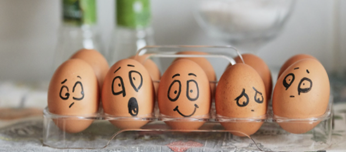
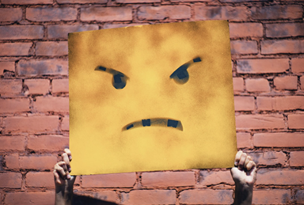

- Самооценка и развитие
- Self

Эмоциональное выгорание – стадии и симптомы, методы восстановления и профилактики
Автор: Лиза ФайнтухИзначально термин «эмоциональное профессиональной сфере и относился...

Изначально термин «эмоциональное профессиональной сфере и относился...
Один из самых важных навыков, которые может дать работа с психотерапевтом - умение в разных ситуациях по-разному обходиться ...
Изначально термин «эмоциональное профессиональной сфере и относился...
Один из самых важных навыков, которые может дать работа с психотерапевтом - умение в разных ситуациях по-разному обходиться ...

Клиенты часто спрашивают, как КОНТРОЛИРОВАТЬ свои негативные эмоции. Пришло время об этом написать!
Изначально термин «эмоциональное профессиональной сфере и относился...
Один из самых важных навыков, которые может дать работа с психотерапевтом - умение в разных ситуациях по-разному обходиться ...
Клиенты часто спрашивают, как КОНТРОЛИРОВАТЬ свои негативные эмоции. Пришло время об этом написать!